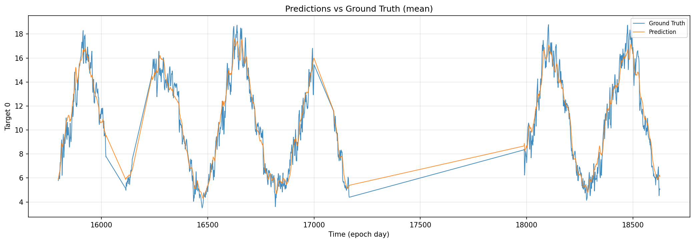
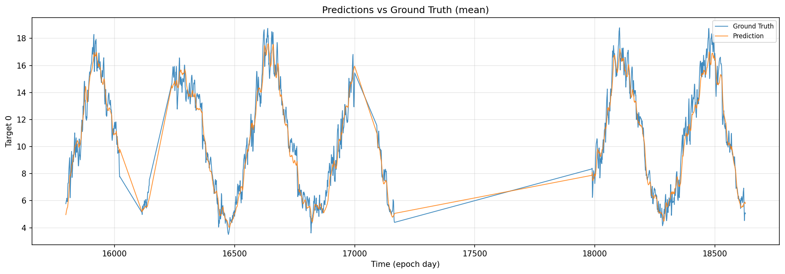
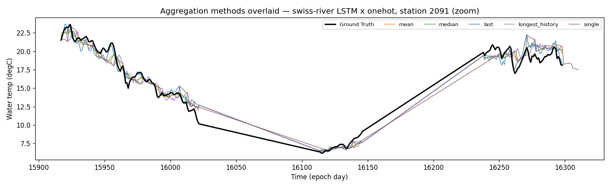
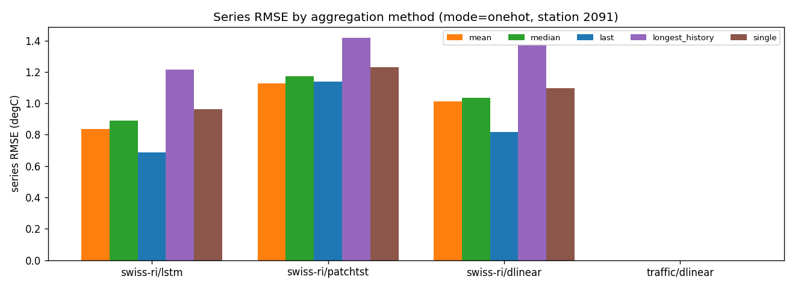
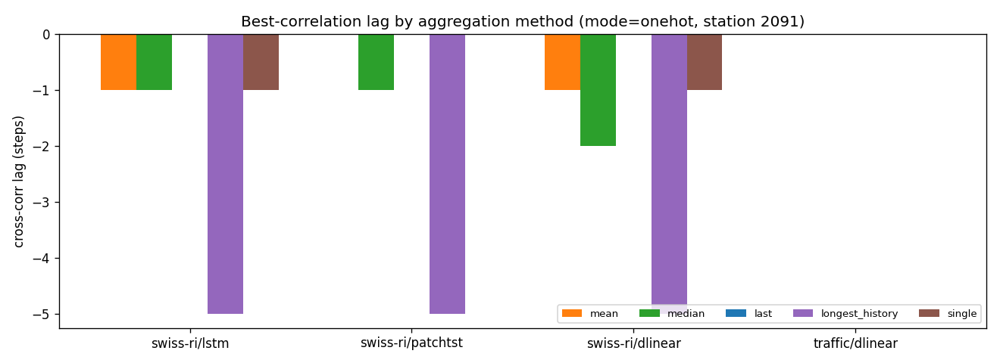
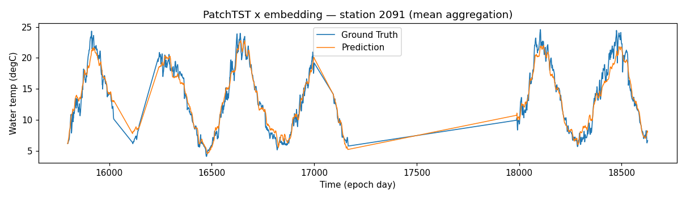

Prediction-vs-Truth Curve & Aggregation Analysis¶
2026-05-15 · Swiss-River-1990 entity-identifier matrix · companion to
2026-05-15-entity-id-progress-slide.md
This note explains how to read the pred-vs-truth curves, why the aggregation method changes the picture so much, and whether the visible lag can be reduced. All numbers are from the real (30-epoch, HPO) runs.
No prior pred-true analysis doc existed in
docs/— this is the first; it consolidates the scattered viz behaviour (liulian/viz/prediction_aggregator.py,liulian/viz/plots.py) into one reference.
1 · Why aggregation is needed at all¶
A forecasting model is evaluated with a sliding window: window n reads
seq_len=90 past days and predicts the next pred_len=7 days. Consecutive
windows overlap, so every calendar day is predicted up to 7 times — once at
horizon +1 (from the most recent window), once at +2, … once at +7 (from the
earliest window).
To draw a single pred-vs-truth curve those 1–7 overlapping predictions per day must be collapsed into one value. That collapse is the "aggregation method", and it is not neutral — see §3.
2 · The seven aggregation methods¶
(liulian/viz/prediction_aggregator.py)
| Method | Rule | Deployable? | Implicit horizon |
|---|---|---|---|
last |
prediction from the latest window covering the day | ✅ | ≈ +1 (shortest) |
longest_history |
prediction from the earliest window (longest look-back) | ✅ | ≈ +7 (longest) |
mean |
arithmetic mean of all overlapping predictions | ✅ | average of +1..+7 |
median |
median of all overlapping predictions | ✅ | average of +1..+7 |
single |
non-overlapping windows only (stride = pred_len) |
✅ | mixed +1..+7 |
best |
per-day pick the prediction closest to truth | ❌ oracle | — (lower bound) |
worst |
per-day pick the prediction farthest from truth | ❌ oracle | — (upper bound) |
best / worst peek at the ground truth — they are not deployable; they
only serve as the empirical error envelope.
3 · Aggregation comparison — the key finding¶
Series RMSE of the aggregated curve for station 2091 (1 708 windows):
| Method | LSTM × onehot | LSTM × none | lag (onehot) |
|---|---|---|---|
best (oracle ↓) |
0.381 °C | 0.969 °C | +0 |
last |
0.688 °C | 1.360 °C | +0 |
mean |
0.836 °C | 1.426 °C | −1 |
median |
0.890 °C | 1.458 °C | −1 |
single |
0.962 °C | 1.483 °C | −1 |
longest_history |
1.216 °C | 1.623 °C | −5 |
worst (oracle ↑) |
1.480 °C | 1.945 °C | −3 |
★ The aggregation method is really an implicit forecast-horizon choice.
lastkeeps the day's prediction from the most recent window → that day sits at horizon +1 of that window → easiest → lowest error (0.688).longest_historykeeps the earliest window → the day sits at horizon +7 → hardest → highest deployable error (1.216) — a 1.77× spread purely from aggregation choice.mean/medianaverage horizons +1..+7, landing in between.
→ When reporting a single pred-true curve, always state the aggregation,
because last vs longest_history differ as much as a good model differs from
a bad one. For honest reporting we recommend mean (horizon-averaged, no
cherry-picking) as the headline and last + longest_history as the
+1 / +7 horizon envelope.
4 · Curve walkthrough¶
4.1 Identifier effect — LSTM, mean aggregation¶
none (baseline) |
onehot (best identifier) |
|---|---|
 |
 |
Both curves track the seasonal water-temperature cycle, but none is visibly
damped at the peaks and troughs (it under-shoots the summer maxima and
over-shoots the winter minima) — the model hedges toward the global mean
because it cannot tell which station it is forecasting. onehot restores the
per-station amplitude: station-2091 series RMSE drops 1.426 → 0.836 °C
(−41 %).
4.2 Aggregation effect — all deployable methods, across three models¶
Comparing the five deployable aggregations (best/worst excluded — they
are oracles, §2). Series RMSE (°C) and cross-correlation lag (steps), fixed
mode = onehot, station 2091:
| combo (split mode) | mean | median | last | longest_history | single |
|---|---|---|---|---|---|
| swiss-river / LSTM (per_entity) | 0.836 / −1 | 0.890 / −1 | 0.688 / 0 | 1.216 / −5 | 0.961 / −1 |
| swiss-river / PatchTST (multi_channel) | 1.129 / 0 | 1.172 / −1 | 1.139 / 0 | 1.417 / −5 | 1.229 / 0 |
| swiss-river / DLinear (multi_channel) | 1.014 / −1 | 1.037 / −2 | 0.816 / 0 | 1.372 / −5 | 1.096 / −1 |
(traffic/DLinear is omitted here: its time-mark array has a different 3-D layout the aggregator does not yet accept — a known viz limitation, not a result. swiss-river covers both split modes, which is what this comparison needs.)
Five aggregations overlaid on the ground truth (LSTM × onehot, zoomed):

Series RMSE and lag, grouped by model:


Horizontal comparison (across models — same column down the table):
- The method ranking is identical for all three architectures:
last < mean < median < single < longest_history. Aggregation acts the same way regardless of model — it is a property of the sliding-window evaluation, not of the network. lastwins everywhere (horizon ≈ +1);longest_historyloses everywhere (horizon ≈ +7).- Lag is purely a function of the method, not the model:
last→ 0,longest_history→ −5,mean/median→ −1/−2 — the same values for LSTM, PatchTST and DLinear. Strong evidence that the visible lag is the forecast horizon showing through, not an architectural artefact.
Vertical comparison (within a model — one row across):
- The
last → longest_historyspread is large: LSTM 1.77× (0.69→1.22), DLinear 1.68× (0.82→1.37), PatchTST 1.25× (1.14→1.42) — i.e. the reported error can nearly double just from the aggregation choice. - PatchTST's spread is the smallest: its patch tokens blend horizons, so it is
the least horizon-sensitive; LSTM/DLinear resolve each horizon more
distinctly and so swing more between
lastandlongest_history. meanandmediansit close together mid-pack in every row — the robust, no-cherry-pick default for a headline curve.
4.3 PatchTST × embedding¶

PatchTST tracks the cycle but its peaks lag and under-shoot more than LSTM × onehot — consistent with §3 of the slide doc (multi-channel split, identifier adds little).
5 · Lag analysis — is the model just shifting the signal?¶
5.1 How the lag is computed¶
For an aggregated prediction series p and truth series t of length T,
both z-scored
the cross-correlation at integer lag ℓ is the Pearson correlation of p̃
against t̃ shifted by ℓ:
ρ(ℓ) = corr( p̃[ ℓ⁺ : T−ℓ⁻ ] , t̃[ ℓ⁻ : T−ℓ⁺ ] ) ℓ ∈ {−5, …, +5}
where ℓ⁺ = max(ℓ, 0), ℓ⁻ = max(−ℓ, 0)
The reported lag is the shift that maximises the correlation:
ℓ* < 0— the prediction trails the truth:p[k+|ℓ*|] ≈ t[k], i.e. the forecast reproduces the signal|ℓ*|steps late (a delayed / persistence-like copy). This is the case of interest.ℓ* > 0— the prediction leads;ℓ* = 0— aligned.
The search range ±5 covers the pred_len = 7 horizon. corr is Pearson's
r; z-scoring makes ρ scale-free so only the phase is measured, not the
amplitude.
5.2 What the lag shows¶
Cross-correlation lag between the aggregated pred and true series (negative lag = prediction is a delayed copy of the truth):
- Lag is horizon-dependent, not a fixed defect. For LSTM × onehot:
last(+1 horizon) → lag 0;mean→ lag −1;longest_history(+7 horizon) → lag −5. A 7-day-ahead forecast of a smooth signal necessarily resembles "carry the trend forward", which reads as a lag. - Better models reveal more lag, not less. LSTM ×
noneshows lag 0 for every method, while LSTM ×onehotshows lag −1/−5. This is not a regression:noneis so noisy that its cross-correlation peak is flat and defaults to 0; onceonehotremoves the amplitude error, the residual horizon-dependent phase shift becomes the dominant leftover structure. - xcorr is 0.97–0.99 across the board — the curve shape is captured well; the remaining error is amplitude at turning points + the +7-horizon phase lag, not a gross mismatch.
6 · Can the lag be optimised?¶
Yes — partially, and it is a concrete next experiment:
- Report short-horizon separately. The +1-day forecast (
last) already has lag 0 and RMSE 0.69 °C. If the application only needs near-term forecasts, the lag problem largely disappears. - Horizon-weighted loss. Current training weights all 7 horizons equally;
the model trades long-horizon accuracy for short. A decaying weight
(
w_h = γ^h) focuses capacity where lag is small. - Train on differences. Predicting
Δtempinstead oftempremoves the autocorrelation that pulls the model toward a lagged persistence forecast. - A learned horizon-selector would close most of the
last − bestgap (0.31 °C) — pick, per day, which overlapping window to trust.
What the identifier cannot fix: lag is a property of multi-step horizon + autocorrelated target, orthogonal to entity identity. The identifier fixes amplitude/level error (−41 % series RMSE); horizon lag needs the loss / target-transform changes above.
7 · Recommendations¶
- Reporting: headline =
mean; always disclose the aggregation; showlast(+1) andlongest_history(+7) as the horizon envelope. - Never quote
best/worstas results — they are oracle bounds only. - Next experiment: horizon-weighted loss + Δ-target ablation on LSTM × onehot, and a per-horizon RMSE breakdown table.
- Curve-doc reuse: this analysis can fold into the eventual paper's "qualitative results" section; the §3 aggregation table is paper-ready.